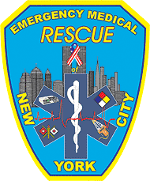

Emergency Medical RESCUE Of NYC
NYC's First Volunteer BLS-D First Response Unit
Technical Services
To the Volunteer EMS Community

Emergency Medical RESCUE of New York City Provides Technical Services to the EMS community. We videotaped the Regional Emergency Medical Services Council of New York City’s EMS Remembrance Day at the Javis Center. We assisted in researching PPE equipment that is currently being offered at this time. We currently are providing photo ID cards to the Volunteer EMS Services in New York City.
Cars 4 Causes has partnered with Emergency
Medical Rescue of New York City.
Cars 4 Causes specializes in car donations and your donation through
Cars
4 Causes will help raise money for Emergency Medical Rescue of New York City.
Click the banner below to donate your car today!
Help Emergency Medical Rescue of New York City When You Search or Shop!
 |
 |